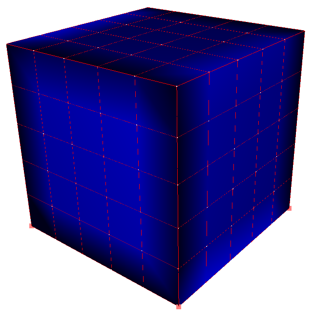

Tutorial Topology Hexa2QuadTopologicalMapping
Description:
The aim of these tutorials is to understand, step by step, how SOFA works.
TODO: write this page: SOFA/examples/Tutorials/Tutorials.html
You can
Change the Scene
You can
Change the description HTML to do step by step procedures
you can modify the graph, and drop objets from the Library of the Modeler